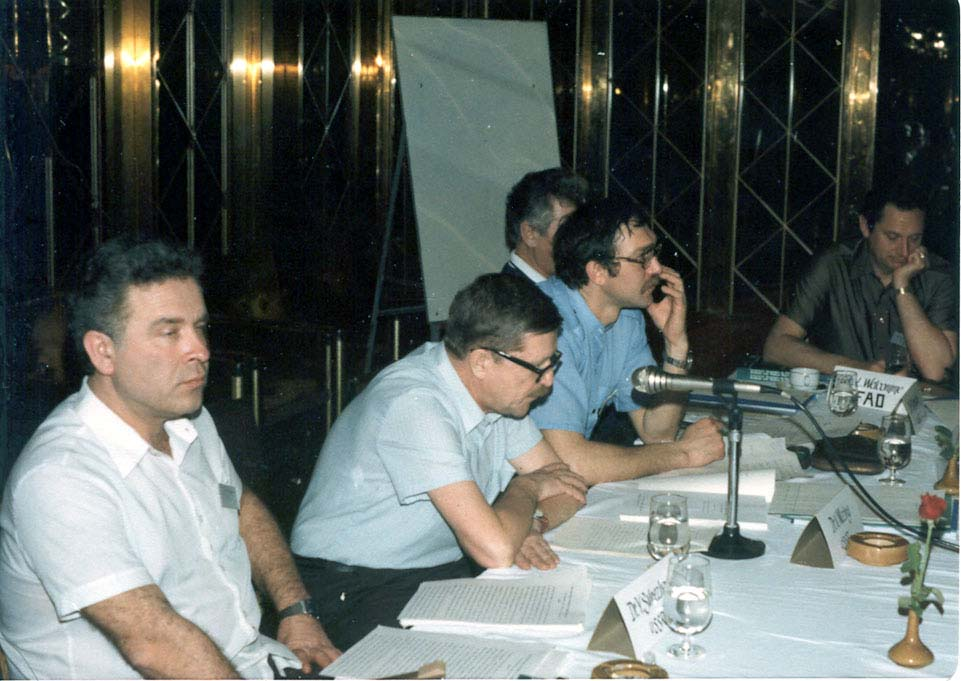
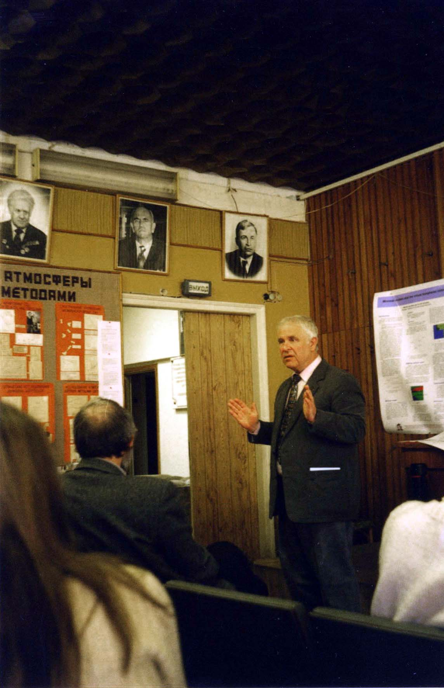
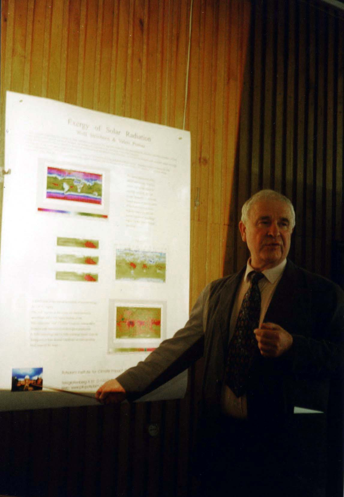
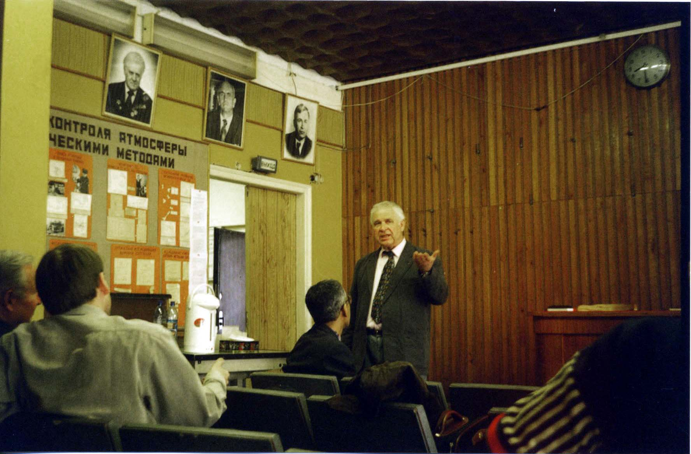
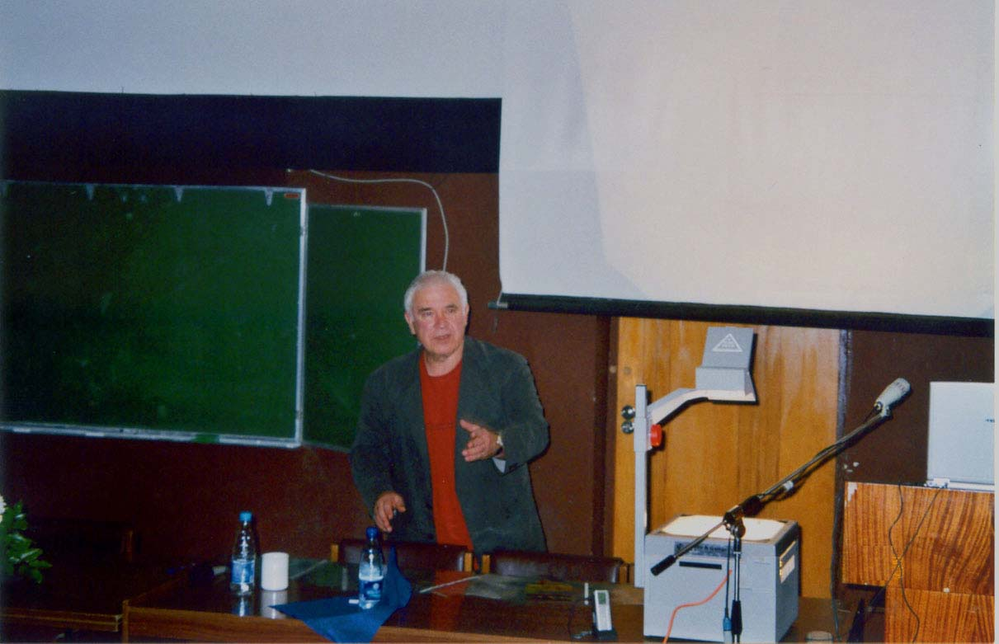
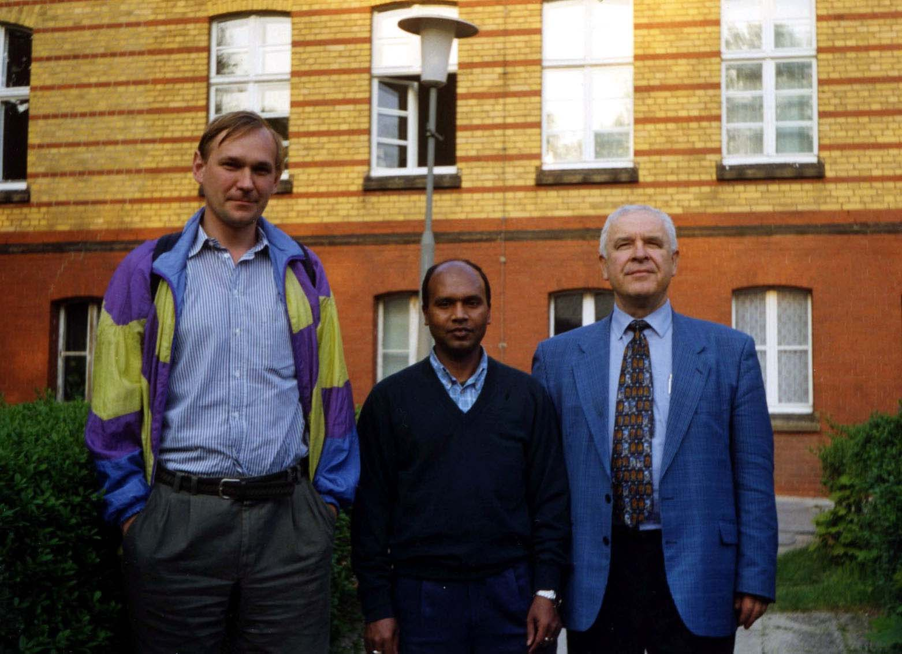

|
Юрий Михайлович Свирежев
основные научные результаты
В области математической генетики Ю.М. Свирежевым разработана
математическая теория микроэволюциии, получены общие уравнения динамики
эволюционирующих популяций, указаны границы применимости классических
уравнений популяционной генетики, получены обобщения "фундаментальной
теоремы естественного отбора" Фишера, сформулированы общие вариационные
принципы популяционной генетики; построена математическая теория
генотипического полиморфизма в популяциях, что позволило с единой точки
зрения объяснить результаты многочисленных генетических экспериментов и
наблюдений над генотипической динамикой реальных популяций.

Ю.М. Свирежев и Д.О. Логофет на совещании
SCOPE/UNEP,
Таиланд, апрель 1983 | В
области математической экологии Ю.М. Свирежевым разработана
математическая теория устойчивости биологических сообществ - один из
важнейших разделов математической экологии. Ю.М. Свирежевым выдвинуты
две новые концепции: иерархической устойчивости и экологической
стабильности. Эти концепции дали мощный толчок теоретическим исследованиям
в области динамики биологических популяций, сообществ и экологических
систем. Строгий вывод основных уравнений математической экологии на основе
законов сохранения вещества и энергии позволил установить границы
применимости классических уравнений Лотки-Вольтерра при моделировании
биологических coобществ, а строгое математическое обоснование и новая
формулировка "принципа плотной упаковки" видов в пространстве
экологических ниш (принципа Мак-Артура) позволили делать практически
важные оценки перспектив интродукции (или инвазии) новых видов в
конкурентные сообщества. Результаты построенной Ю.М. Свирежевым
математической теории трофических цепей обнаруживают принципиальную
дискретность трофических уровней и позволяют по-новому подходить к решению
проблемы оптимизации в агроценозах, дают возможность определить границы
вмешательства в экосистему, не нарушающего саму экосистему. Обширные
исследования динамических свойств системы "хищник-жертва" - этого
традиционного объекта математической экологии - позволили
Ю.М. Свирежеву получить ряд новых результатов в проблеме "способен ли
хищник (или паразит) регулировать численность жертвы (хозяина)", что
создало принципиально новые возможности в оптимизации подбора
видов-агентов биологической борьбы с вредителями.
Разработанная
Ю.М. Свирежевым теория оптимальных процессов эксплуатации популяций и
сообществ позволяет находить оптимальные стратегии "сбора урожая" для
популяций и сообществ с помощью построенных для них математических
моделей.

Ю.М. Свирежев выступает в ИФА РАН,
апрель 2003
| Результаты Ю.М. Свирежева по
обнаружению сложных динамических режимов (катастрофы, странные аттракторы,
хаос) в относительно простых моделях экологических систем дают возможность
по-новому взглянуть на природу нерегулярных колебаний численности
популяций и во многих случаях объяснить их эндогенными причинами,
связанными с характером внутрипопуляционной регуляции численности и
структурой экосистем. Результаты Ю.М. Свирежева определили новое
направление в исследовании динамических режимов экологических систем.
Развиты новые подходы в проблемах распространения волн и
возникновения пространственных неоднородностей в "экологически активных
средах". Предложенная новая концепция развивает новый подход к описанию
возникновения и распространения популяционных волн и создает новые
возможности для оценки вероятности возникновения и скорости
распространения вспышек лесных и сельскохозяйственных вредителей, а также
для описания эпидемий.

Ю.М. Свирежев выступает в ИФА РАН,
апрель 2003
| Разработан новый подход к проблеме
возникновения дискретных структур в результате действия непрерывных
механизмов взаимовлияния компонентов экосистемы (например, процессы
самоизреживания в популяциях растений).
Разработан
эколого-энергетический метод оценки агроэкосистем, с помощью которого
можно достаточно объективно сравнивать экологическую эффективность
различных агроэкосистем и систем сельского хозяйства на региональном
уровне.
Ю.М. Свирежев внес свой вклад и в разработку методов
агрегирования в моделях сложных экосистем, которые позволяют значительно
сократить объем необходимой экспериментальной информации и снизить объем
вычислительных ресурсов для реализации модели на ЭВМ.

Ю.М. Свирежев выступает в ИФА РАН,
апрель 2003
| Ю.М. Свирежевым разработаны
математические модели оценки и прогнозирования состояния здоровья человека
в экстремальных условиях. Предложенная им методика применялась для оценки
и прогнозирования состояния здоровья космонавтов в космических полетах.
Под руководством Ю.М. Свирежева и при его непосредственным участии
были разработаны модельные концепции пространственно ограниченных систем
жизнеобеспечения человека и подходы к моделированию функциональных систем
человека для оценки и коррекции его функций в экстремальных условиях (с
приложениями в авиационной и космической медицине), а также комплексный
подход к моделированию процессов диагностики, профилактики и лечения
кардиологических заболеваний (с приложениями в кардиохирургии и
кардиофармакологии).

Ю.М. Свирежев ведет заседание секции на Пятой
Европейской конференции по экологическому моделированию - ECEM,
Пущино, сентябрь 2005 | В области
моделирования глобальных биосферных процессов Ю.М. Свирежевым найдены
подходы, позволяющие формализовать описание экологических процессов на
глобальном уровне. В 1985-86 гг. на основе этих работ были проведены
модельные исследования экологических и демографических последствий ядерной
войны.
Предложена методология оценки экологического риска на
локальном и региональном уровнях в условиях неопределенности и высокой
степени риска. Разработанная методология оценки основана на понятии
критических событий и оценке вероятности этих критических событий.
 Ю.М. Свирежев, Б. Бишваш и
С.В. Веневский, ПИК, апрель 1999 | За
годы работы в Институте изучения последствий изменения климата (Потсдам,
Германия) (1992-2007) Ю.М. Свирежевым были проведены исследования по
термодинамике биосферы, глобальному углеродному циклу и динамике
растительности. Детальный анализ механизмов взаимодействия наземной
растительности и климатической системы Земли разнообразными
математическими средствами сопровождался смелыми физическими обобщениями и
новыми подходами. Новым шагом в развитии минимальных моделей биосферы
стала совместная модель глобальных круговоротов углерода и воды с учетом
океанского обмена и нелинейных взаимодействий в системе
"климат-растительность-углеродный цикл". Впервые для моделей такого класса
исследованы устойчивость и бифуркации биосферы по отношению к
неопределенности информации о полной массе вещества и антропогенным
возмущениям. Оригинальный подход к проблеме моделирования углеродного
цикла наземных экосистем позволил Ю.М. Свирежеву ввести понятия
спектрального портрета наземной части цикла углерода и углеродного
паспорта отдельно взятого государства. Ю.М. Свирежевым предложен
новый универсальный метод моделирования глобального и регионального
растительного покрова в зависимости от климата на основе вероятностных
схем взаимодействия типов растительности. Этот метод может быть
использован в динамических моделях системы "растительность-климат" для
разных пространственных масштабов. Другой аспект взаимодействия атмосферы
с растительным покровом исследован в работах по термодинамике экосистем, в
которых впервые на основе термодинамических методов построена связная
теория растительности как активного слоя биосферы, преобразующего
солнечную радиацию нелинейным образом по принципу оптимальности некоторых
термодинамических величин.
|